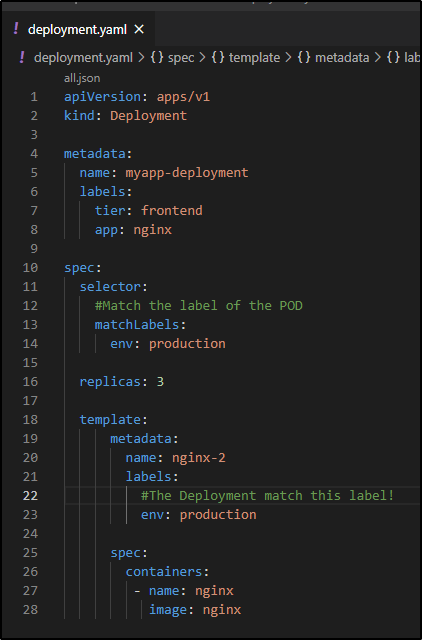
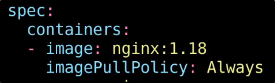

Demo Deployment - Update and Rollback
Per primo punto, creiamo un YAML file del Deployment:
NB: Dovrebbe essere disponibile in allegato!

Creiamo il nostro deployment:

Ora possiamo controllare lo status del nostro rollout:
nel nostro caso è il primo di quando è stato creato il Deployment.

Nel caso stesse ancora deployando, se effettuiamo abbastanza in fretta
il comando precedente, possiamo vedere che sta creando in modalità "Rolling" i PODs!

Con il comando "kubectl rollout history" possiamo vedere la lista dei rollout effettuati:
vi è solo quello di base della creazione del Deployment.

La causa non è stata scritta.
Infatti, dovevamo aggiungere l'opzione di --record quando creavamo il deployment!


Se guardiamo nella descrizione del Deployment, possiamo notare nelle annotazioni
il nostro comando di creazione.

Ora, ad esempio: facciamo qualche cambiamento.
NB: Sempre necessaria l'opzione di --record!

Cambiamo la versione di nginx:
NB: Questa è la Documentation di DockerHub!


Ora se usiamo "kubectl describe deployment", possiamo notare
le creazioni e distruzioni dei PODs.

Altro modo per cambiare l'immagine, senza cambiare il YAML, è tramite il comando set:

Ora se eseguiamo il comando "kubectl rollout history", notiamo quali cambiamenti
sono stati effettuati!

Se abbiamo necessità di fare Rollback, possiamo usare "kubectl rollback undo" per tornare
ad una versione precedente funzionante (nel nostro caso: dalla 3 alla 2)

Ora se notiamo la Revision 2 è svanita! Ora è diventata la Revision 4.

Comodo quando si sbaglia qualcosa, come una versione dell'immagine!